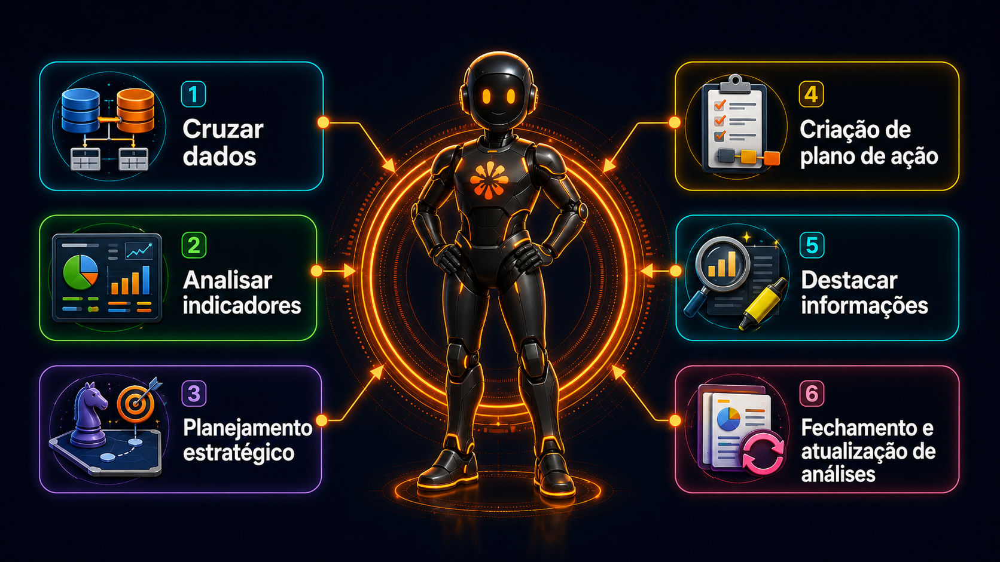
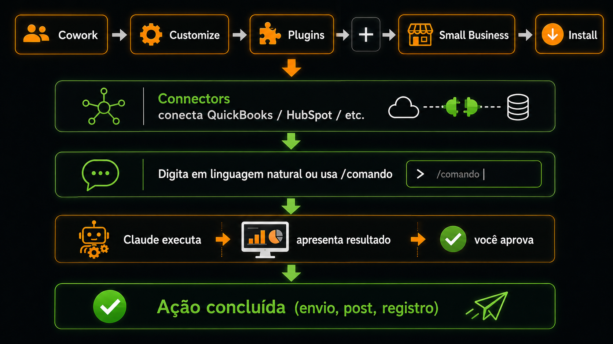

Uma aula para entender por que o Claude está deixando de ser apenas um chatbot e se tornando uma plataforma de trabalho para análise, relatórios, automações e negócios reais.
Chat · Cowork · Code · Skills · WorkflowsClaude é o assistente de I.A da Anthropic. Ele conversa, raciocina, escreve, analisa documentos, interpreta planilhas e executa tarefas complexas sem exigir conhecimento técnico do usuário.
Excelente para textos longos, relatórios, explicações, revisão de documentos e construção de argumentos.
Consegue trabalhar com arquivos extensos, organizar informações e manter coerência em projetos maiores.
O diferencial está no conjunto: Chat, Cowork, Code, conectores, skills e workflows para negócios reais.
A interface de conversa que a maioria das pessoas conhece, mas com poder para analisar arquivos, pesquisar, escrever, resumir e trabalhar por projeto.
A camada de automação e operação. É onde entram conectores, workflows e tarefas recorrentes com aprovação humana.
Ferramenta para automação e desenvolvimento. É o próximo passo para quem quer criar soluções mais personalizadas.
Skills são instruções reutilizáveis que ensinam o Claude a executar uma tarefa do seu jeito. Pense nelas como playbooks salvos: você define o padrão uma vez e o Claude segue esse padrão sempre que precisar.

São integrações que dão ao Claude acesso às ferramentas externas, como Gmail, Google Drive, Canva, Slack, Microsoft 365 e outros apps.
São as instruções que dizem como o Claude deve agir, responder e executar uma tarefa seguindo o padrão da empresa.
São pacotes completos que combinam skills, conectores e sub-agentes para executar uma função específica do negócio.
Claude for Small Business foi criado para aproximar a I.A das rotinas de pequenas e médias empresas. A proposta é reunir workflows, skills e conectores em uma experiência mais pronta para uso, especialmente para quem precisa gerar relatórios, revisar documentos, organizar finanças, vender melhor e acompanhar operações.
| Conector | Área | Como ajuda no negócio |
|---|---|---|
| QuickBooks | Financeiro | Organização contábil, margem, faturas e fluxo financeiro |
| PayPal | Pagamentos | Acompanhamento de recebimentos e movimentações |
| HubSpot | Vendas e CRM | Triagem de leads e apoio ao relacionamento comercial |
| Canva | Design e marketing | Criação de materiais e apoio visual para campanhas |
| DocuSign | Contratos | Revisão, organização e acompanhamento de documentos |
| Google Workspace | Produtividade | Trabalho com documentos, planilhas e arquivos do Google |
| Microsoft 365 | Produtividade | Integração com rotinas de Word, Excel, PowerPoint e Outlook |
| Slack | Comunicação | Resumo de conversas, reuniões, tarefas e alinhamentos |
| O que você pede | O que o Claude faz |
|---|---|
| “Me ajuda a fechar abril e reconciliar as contas” | /month-close |
| “Quais são minhas margens no lado de catering do negócio?” | /margin-analyzer |
| “Prepara meus impostos estimados do Q2 para o contador” | /tax-organizer |
| “Junho costuma ser um mês fraco — me ajuda a planejar uma promo” | /campaign-planner |
| “Um cliente reclamou de entrega atrasada. Me ajuda a redigir uma resposta” | /customer-reply |
| “Arruma o CRM e me diz o que vale uma nova tentativa” | /lead-triage |
| “Me passa meu briefing de segunda-feira” | /monday-brief |
